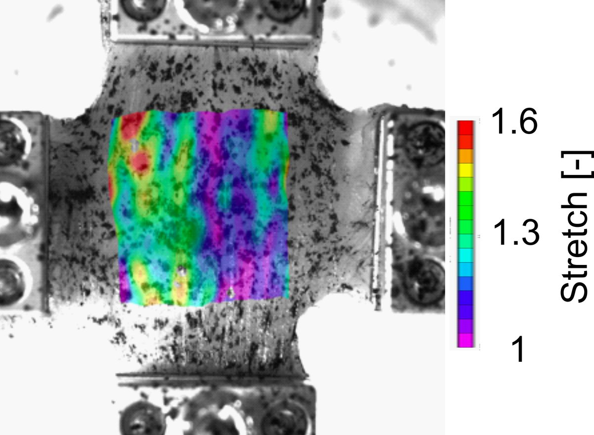
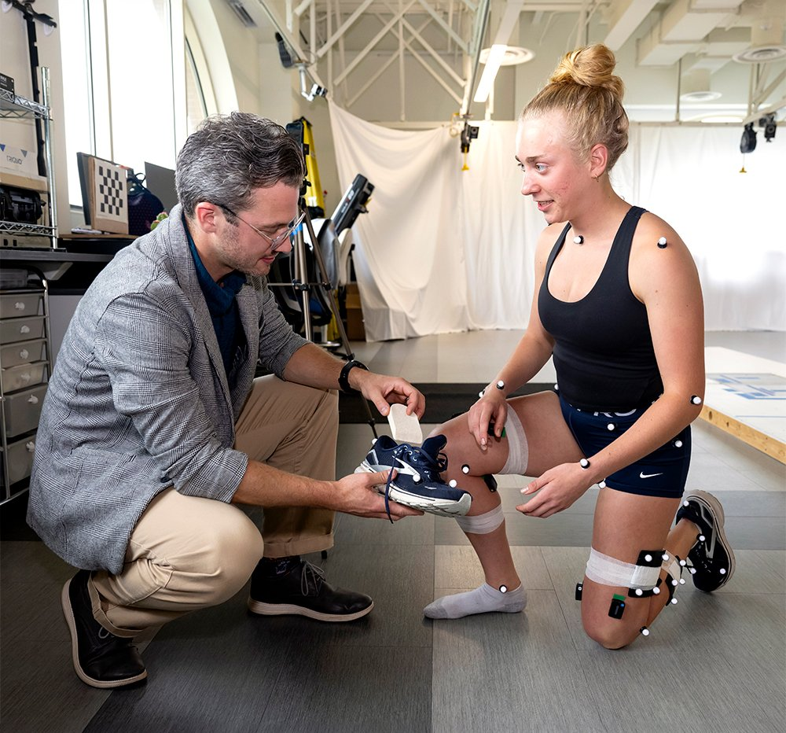
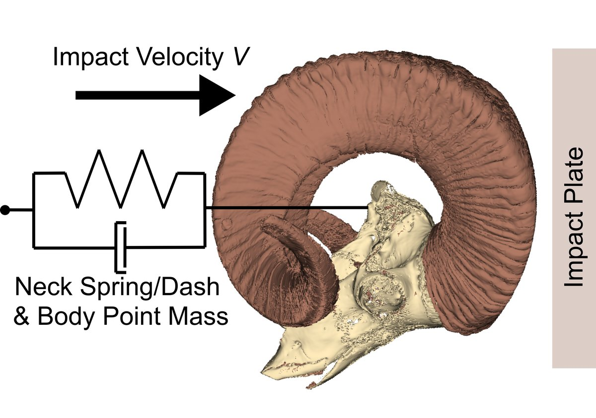
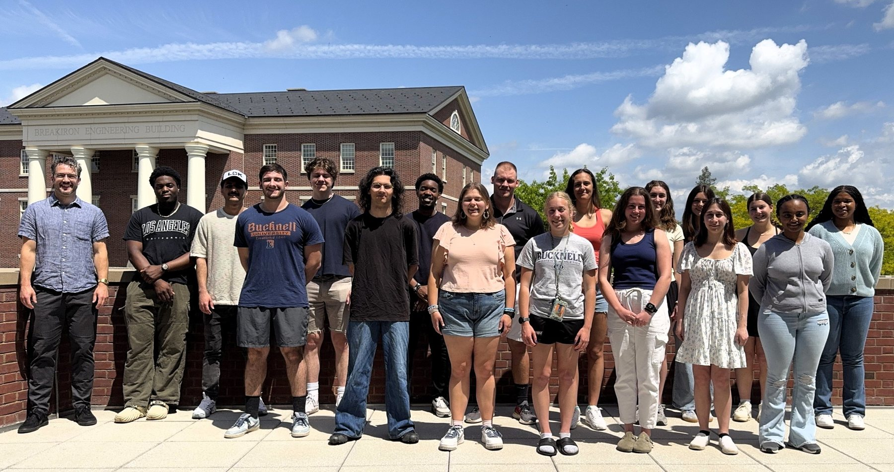
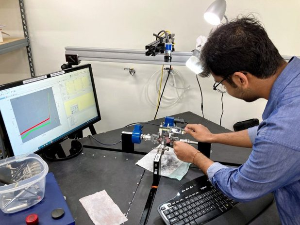
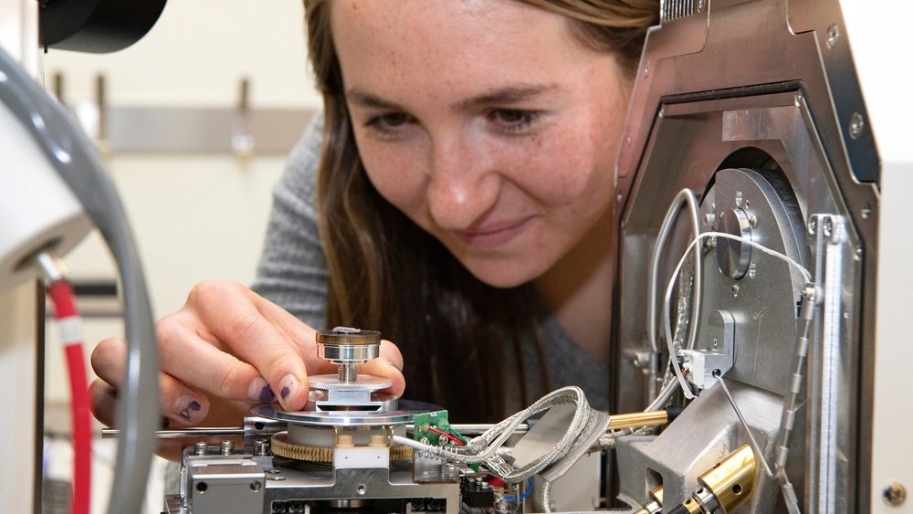
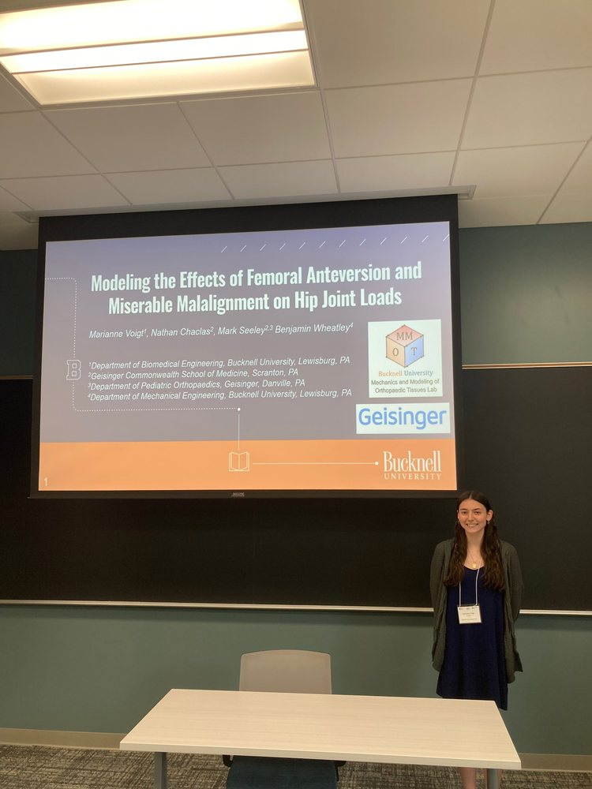
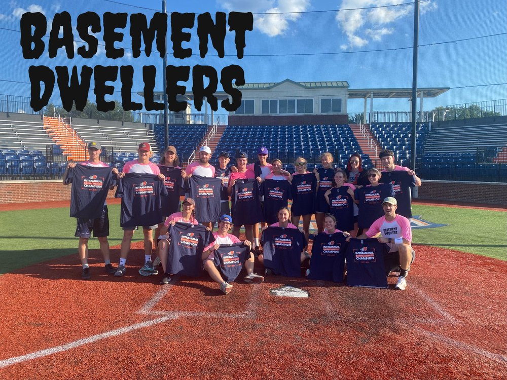

Muscle
What are the mechanisms of muscle stiffness, and why are they important?
We determine how structure dictates mechanical properties.
Experimental and computational biomechanics research from the microscale to the whole body, carried out by Bucknell undergraduates.

Muscle
We determine how structure dictates mechanical properties.

Movement
We use low-cost motion analysis tools and computational models to understand human motion, joint mechanics, and muscle fatigue.

Bioinspired design
We study protective mechanisms in bighorn sheep skull and brains, with the goal of improving human safety.





Our mission
To foster individual growth through an interdisciplinary, inclusive, group-oriented culture that performs rigorous, student-led biomechanics research.
Our vision: to be the global leader in training undergraduate biomechanists.
We enable students to pursue their passions and embrace failure as part of the learning process. We believe curiosity, grit, and ownership are essential research skills, and prioritize these over technical aptitude. With individualized mentorship and strong peer support, we enable individual and scholarly growth.
We externally disseminate biomechanics research, founded on rigorous experimental and computational methods. Successful research can take many forms; however our work is documented, ethical, repeatable, and clearly communicated to the biomechanics community.
We welcome students of all academic and technical ability levels. Interdisciplinarity is a core principle of our lab and a key contributor to our success, with students across colleges and departments at Bucknell. We cultivate an environment in which people with different backgrounds, identities, abilities, and perspectives can learn, contribute, and thrive.
We support one another through peer mentoring, open communication, constructive feedback, and shared resources. Learning about each other’s work and collaborating (internally and externally) promotes personal growth and improves the quality of our scholarship.
Current members and projects
Where alumni go
Graduate school or medical school programs at Duke, MIT, the University of Washington, NYU, Boston University, the University of Delaware, Temple, and Colorado State.
Engineering careers at Northrop Grumman, Deloitte, Raymond Corp, the Department of Defense and more.
Three NSF Graduate Research Fellows.
Recent posters and talks from the lab, newest first.
Principal investigator
Associate Professor of Mechanical Engineering
Prof. Wheatley has been leading the MMOT Lab at Bucknell since 2017. His training style in the lab blends scaffolded individual research projects with a group-oriented culture. He maintains an active role in student mentorship across Bucknell's campus and brings collaborations with clinical and university researchers into the lab.
Curious about biomechanics? Bucknell students from any major are welcome. No research experience needed.
Browse recent student posters and talks to find a project that interests you.
Browse presentations ↑Send Prof. Wheatley a short email with your major and class year and what draws you to the lab.
b.wheatley@bucknell.eduAcademic East 302 · Bucknell University · Lewisburg, PA